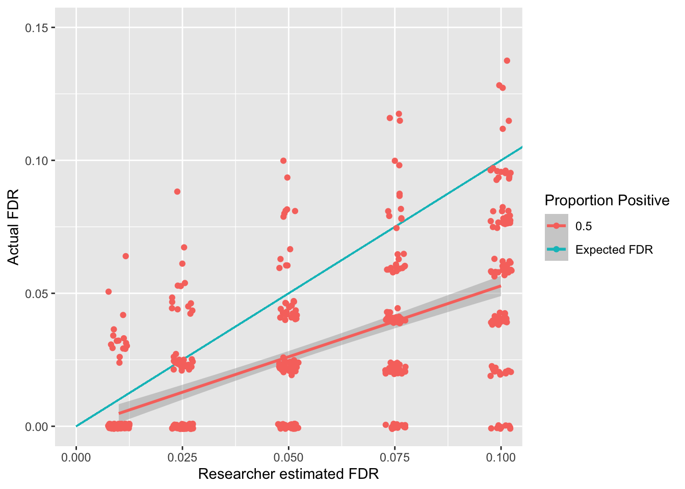

False Discovery Rate(R)
Course Overview
Red means that the page does not exist yet
Orange means that the page is started
Click here for a reminder about what positive and negative effects are in the population
In the context of multiple testing we will refer to effects in the population that do exist as positives, and effects that don’t exist in the population as negatives. This means that a test on a negative effect should ideally you give you a non-significant (negative) result in your sample so that your sample reflects the population (and gives you a true negative). Similarly, if an effect in the population exists, ideally your test on your sample will give you a significant result to reflect a true positive.
What is the False Discovery Rate?
The false discovery rate (FDR) is the expected proportion of false positives out of all positives (both true and false). In simpler terms, out of all the findings you present as positive, FDR reflects how many of them are false. It can be formalised as:
\[ FDR = \frac{FalsePositives}{FalsePositives + TruePositives} \]
We will investigate one procedure that aims to control the FDR and then do simulations to confirm whether it is successful.
Benjamini-Hochberg procedure
Similar to Bonferroni-Holm corrections, you first rank all the p-values of all your tests, and then calculate the \(\alpha\) threshold depending on the rank. This calculation will also include your estimation of the false discovery rate
\[ \alpha = (k/m)*Q \]
\(\alpha\) is the p-value significance threshold for the specific test
\(k\) is the rank of the current test’s p-value. 1 represents the smallest p-value
\(m\) is the total number of tests
\(Q\) is the false discovery rate (chosen by the researcher)
Let’s see what \(\alpha_{bh}\) values we get with this approach within a made-up experiment that had 10 tests
library(kableExtra)
bh_df <- data.frame(
p = c(.001,.01,.025,.041,.045,.06,.08,.1,.12,.3),
rank = 1:10,
tests = 10,
fdr = .1
)
bh_df$alpha = (bh_df$rank/bh_df$tests) * bh_df$fdr
bh_df$sig = bh_df$alpha > bh_df$p
bh_df %>%
kable(booktabs = T) %>%
kable_styling() %>%
row_spec(which(bh_df$alpha > bh_df$p), bold = T, color = "white", background = "blue")| p | rank | tests | fdr | alpha | sig |
|---|---|---|---|---|---|
| 0.001 | 1 | 10 | 0.1 | 0.01 | TRUE |
| 0.010 | 2 | 10 | 0.1 | 0.02 | TRUE |
| 0.025 | 3 | 10 | 0.1 | 0.03 | TRUE |
| 0.041 | 4 | 10 | 0.1 | 0.04 | FALSE |
| 0.045 | 5 | 10 | 0.1 | 0.05 | TRUE |
| 0.060 | 6 | 10 | 0.1 | 0.06 | FALSE |
| 0.080 | 7 | 10 | 0.1 | 0.07 | FALSE |
| 0.100 | 8 | 10 | 0.1 | 0.08 | FALSE |
| 0.120 | 9 | 10 | 0.1 | 0.09 | FALSE |
| 0.300 | 10 | 10 | 0.1 | 0.10 | FALSE |
import pandas as pd
# Create a DataFrame
bh_df = pd.DataFrame({
'p': [.001, .01, .025, .041, .045, .06, .08, .1, .12, .3],
'rank': list(range(1, 11)),
'tests': 10,
'fdr': 0.1
})
# Calculate alpha and significance
bh_df['alpha'] = (bh_df['rank'] / bh_df['tests']) * bh_df['fdr']
bh_df['sig'] = bh_df['alpha'] > bh_df['p']
# Create a custom styling function to highlight rows
def highlight_greaterthan(s, threshold, column):
is_max = pd.Series(data=False, index=s.index)
is_max[column] = s.loc[column] >= threshold
# Create a style object with blue background and white color for the text
style = ['background-color: blue;color: white' if is_max.any() else '' for v in is_max]
# Set white text for the entire row
return style
bh_df.style.apply(highlight_greaterthan, threshold=1.0, column=['sig'], axis=1)We can see that there’s a slightly odd pattern, in which the fourth smallest p-value is not significant but the fifth is. For the Benjamini-Hochberg correction you take the lowest ranked p-value that is still significant and then accept all tests that have a smaller p-value than it as significant. So the rank 4 test above would be accepted as significant because of this rule.
Let us now check how this correction relates to positives and negatives in the population using some simulations. For these simulations we will split the data into “positive” and “negative” population tests. For “positive” effects in the population we will use one-sample t-tests to generate expected p-values. For negative effects in the population we will generate a p-value between 0 and 1 as each p-value is equally likely for negative effects. We will also assume the proportion of positive effects being tested is .5, i.e. that half of our tests should get a significant result to reflect the population and the other half should be negative.
# Maximise the code above to generate the required data
ggplot(fdr_sim_df, aes(x = q, y = fdr,color=as.factor(positive_prop))) +
geom_smooth(method = "lm", formula = "y ~ x") +
xlab("Researcher estimated FDR") +
ylab("Actual FDR") +
geom_segment(aes(x = 0, y = 0, xend = 1, yend = 1, color="Expected FDR")) +
geom_jitter(width = .0025, height = 0.001) +
coord_cartesian(
xlim = (c(0,.1)),
ylim = (c(0,.15))
) +
labs(color="Proportion Positive")
The above simulations show an association between the false discovery rate a researcher sets (known as \(q\)) and the actual false discovery rate. Whilst this page focuses on a scenario in which half of the effects being tested are positive, see here for the impact of having different positive rates on the FDR rate. The good news is that the Benjamani-Holchberg procedure generally keeps the FDR below the \(q\) that the researcher sets.